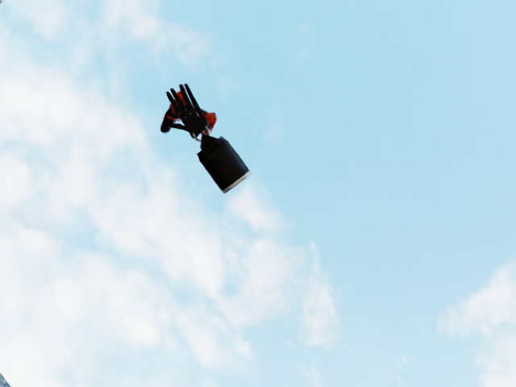
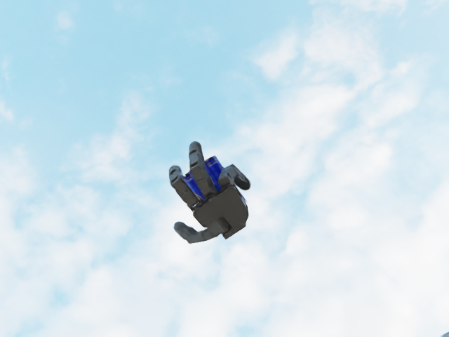
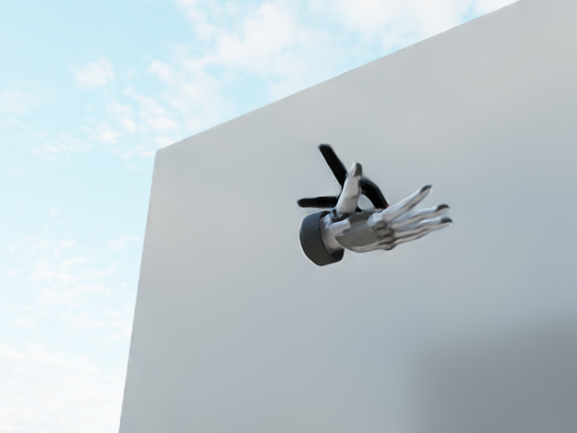
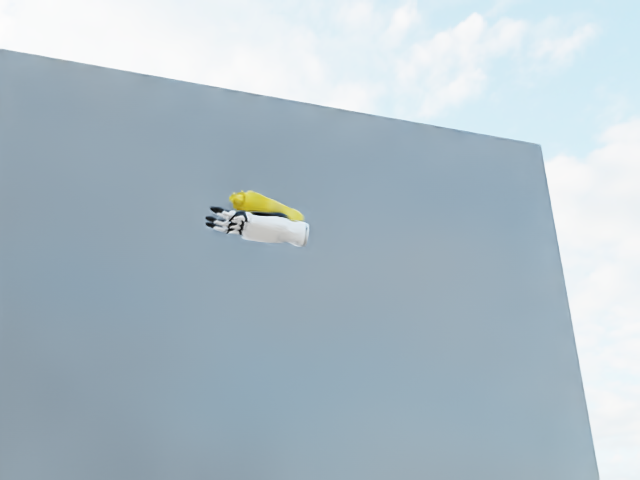
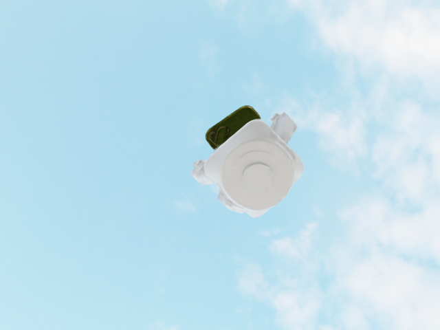

- 1Brown University
- 2The University of Texas at Dallas

Abstract
Humans naturally integrate vision and haptics for robust object perception during manipulation. The loss of
either modality significantly degrades performance. Inspired by this multisensory integration, prior object
pose estimation research has attempted to combine visual and haptic/tactile feedback. Although these works
demonstrate improvements in controlled environments or synthetic datasets, they often underperform vision-only
approaches in real-world settings due to poor generalization across diverse grippers, sensor layouts, or
sim-to-real environments. Furthermore, they typically estimate the object pose for each frame independently,
resulting in less coherent tracking over sequences in real-world deployments. To address these limitations, we
introduce a novel unified haptic representation that effectively handles multiple gripper embodiments.
Building on this representation, we introduce a new visuo-haptic transformer-based object pose tracker that
seamlessly integrates visual and haptic input. We validate our framework in our dataset and the Feelsight
dataset, demonstrating significant performance improvement on challenging sequences. Notably, our method
achieves superior generalization and robustness across novel embodiments, objects, and sensor types (both
taxel-based and vision-based tactile sensors). In real-world experiments, we demonstrate that our approach
outperforms state-of-the-art visual trackers by a large margin. We further show that we can achieve precise
manipulation tasks by incorporating our real-time object tracking result into motion plans, underscoring the
advantages of visuo-haptic perception.
Tracking Experiments
Object
Dataset Visualization
We develop a multi-embodied dataset using NVIDIA Isaac Sim to enable cross-embodiment learning and thorough evaluation:

|
 |  |  |

|

|
 |  |
Citation
If you find our project useful, please consider citing:AخA
@inproceedings{li2025vhop,
title={V-HOP: Visuo-Haptic 6D Object Pose Tracking},
author={Hongyu Li and Mingxi Jia and Tuluhan Akbulut and Yu Xiang and George Konidaris and Srinath Sridhar},
booktitle={Proceedings of Robotics: Science and Systems},
year={2025}
}